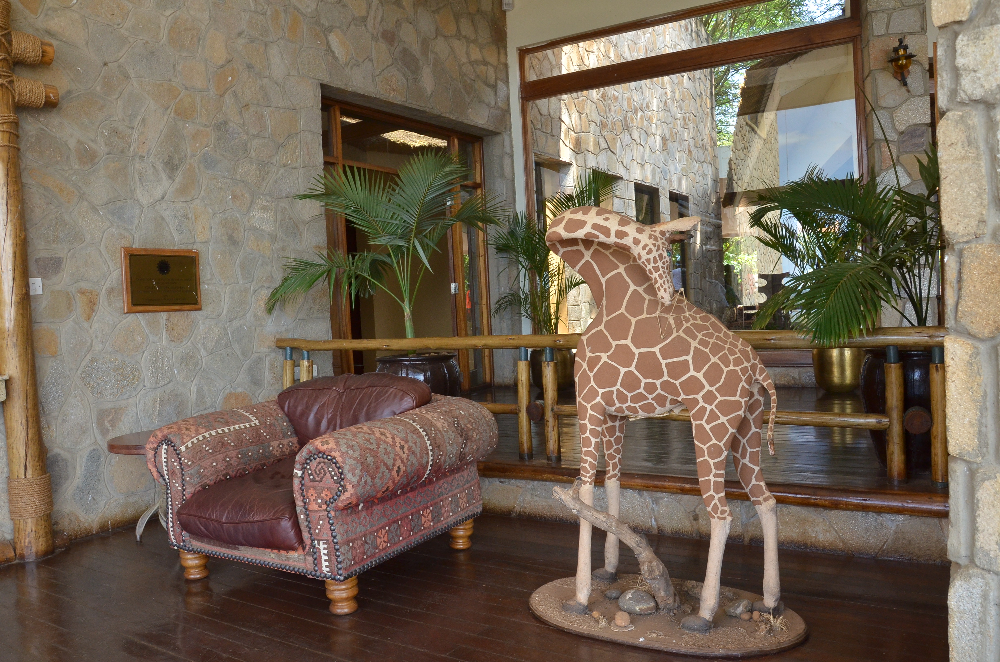

About Mgahinga National Park
Mgahinga National park is located south west of Uganda in Kisoro district among the Virunga volcanic mountain chain.

The park lies along the Northern slopes of mount Gahinga, Mt.Sabyinyo and Mt. Muhabura all of which are part of the six Birunga mountain chain marking the Southern limit of the Albertine Rift valley belonging to three countries that is to say DR Congo, Uganda and Rwanda. It is home to the mountain Gorillas and the golden monkeys thus the line "Where Gold meets Silver"
3 DAYS SAFARI TO MURCHISON
Day 1 : Pick up from Entebbe airport/ Hotel and transfer to Murchison Falls
Early in the morning after your breakfast, you will meet our tour guide who will transfer you to Murchison Falls National park in North western Uganda, stopover in Masindi town for lunch and proceed to Uganda’s biggest National park, do an evening game drive. Dinner and overnight at Fort Murchison Lodge
Meal plan: full board READ MORE
"Would you love to travel", to Murchison?
Birding is known as a haven for birders destination on a Uganda bird watching tours with a checklist of over 360 bird species. Birding is at it best from February to April and in September because it is the main fruiting session
Chimp trekking is another adventurous activity within the forest. The forest is home to over 700 chimps with some individuals which are habituated for trekking making it the most poopular activity in the forest
About the Chimpanze Trekking "This is done in two (2) sessions, one in the morning at 7am and the other in the afternoon at 2pm with a briefing at the visitors information center. After briefing, the visitors are grouped into 8 people and allocated habituated chimps according to their level of fitness.
16
Murchison Discovery